🕓2025年11月24日
视频教程：▶https://youtu.be/0KtyoC4vufg
注册美区/港区 id 成功后，你可以下载很多在国区商店无法购买和下载的 翻墙 App，例如「Tiktok」、「Netflix」等。同时也能订阅「ChatGPT Plus」。另外手机上申请的美区 Apple ID，Apple TV 可以直接使用，是看奈飞、迪士尼等流媒体的必要条件之一。
本教程不需要美国手机号、不需要 VPN、不需要支付方式！
海外 Apple ID 购买地址： 账号星球 | 苹果ID商店
第一种方法：注册美区ID（无需翻墙、无需信用卡）
步骤 1：进入注册页面
打开浏览器，进入注册页面： appleid.apple.com ， 点击右上角创建 Apple ID。
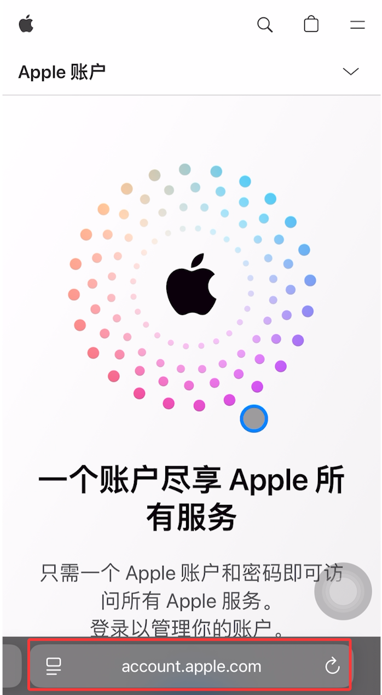
步骤 2：填写个人信息
按以下格式填写：
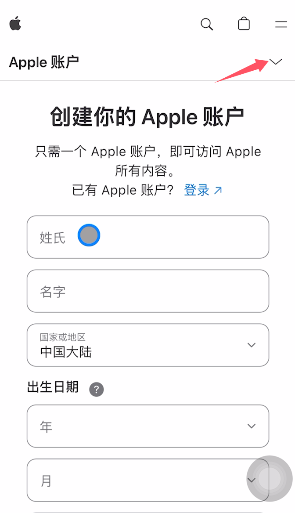
姓名：随便写英文即可， 如 John Lee
国家：选择中国大陆
【先注册一个中国大陆账号，随后再将国家改成美国 】
出生日期：填大于18岁的生日 即可
邮箱：填写你准备好的 Gmail / Outlook。
密码：要求字母 + 数字 + 特殊符号。
电话号码：填中国大陆手机，可以接收验证码
✅勾选 Apple 和你的数据隐私
❎取消勾选通知和 APP、音乐等推荐
填写验证码，继续下一步操作;
填写收到的邮箱验证码和手机验证码；
验证完成后，到这一步，大陆的ID账户就创建好了 。
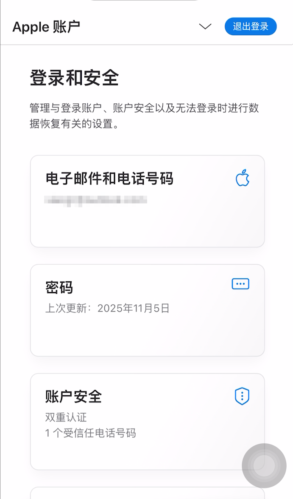
步骤3：设置美国地区资料
在个人信息里更改国家地区。
点击更改国家或地区，跳转到付款方式页面
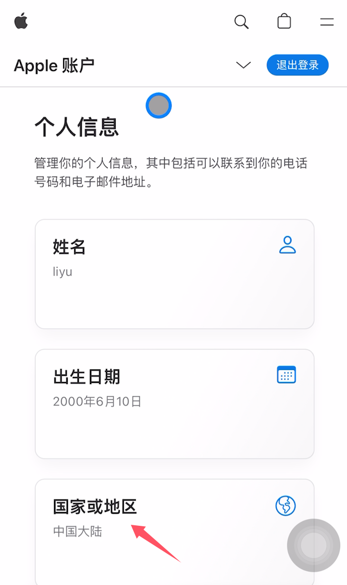
国家或地区：改成美国;
支付方式：选：None（无）;
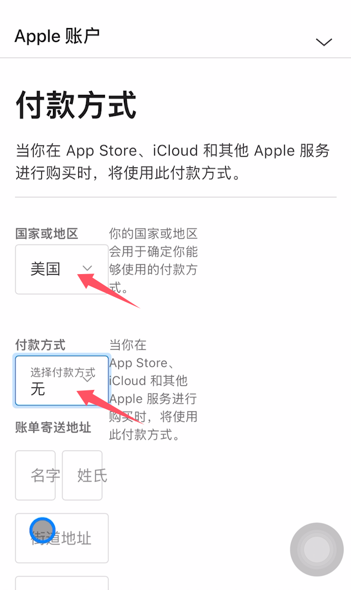
账单寄送地址：用浏览器打开 美国地址生成器：https://www.meiguodizhi.com/，填写地址时建议用免税州，比如俄勒冈州，这样获取免费app时，无需补充付款方式。
美国5个免税州：阿拉斯加州（Alaska）、特拉华州（Delaware）、蒙大 拿州（Montana）、新罕布什尔州（New Hampshire）和俄勒冈州（Oregon）。
配送地址：填写配送地址，翻到下面，先更改国家或地区为美国，勾选拷贝账单地址，配送地址自动就添加好了。
点击更新，接下来点击关闭，可以看到 Apple ID 账户国家就是美国地区了。
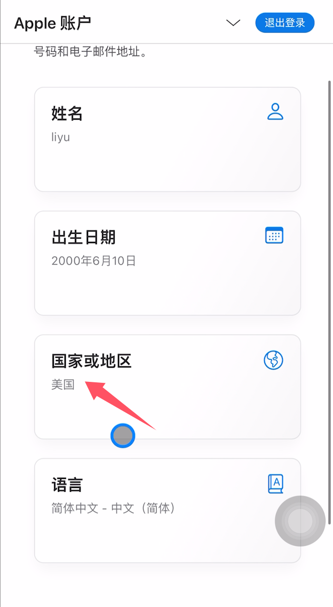
步骤4：登录 App Store
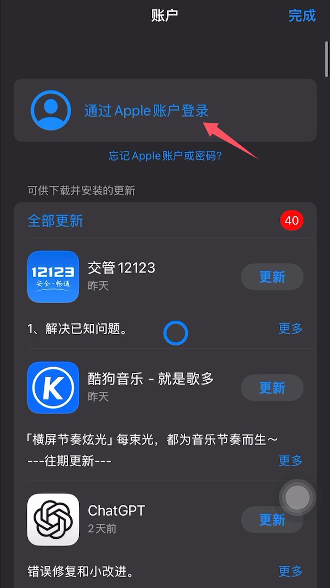
先退出当前 Apple ID
点击 顶部账号 → 翻到最下面，点击退出登录
接下来，登录刚刚注册的美区 Apple ID ，这里选择不是XIAOLU
输入 Apple ID邮箱和密码，点击继续，输入手机验证码通过双重认证，
现在可以看到账号已经登录 成功了，我们现在来下载海外 APP试下。
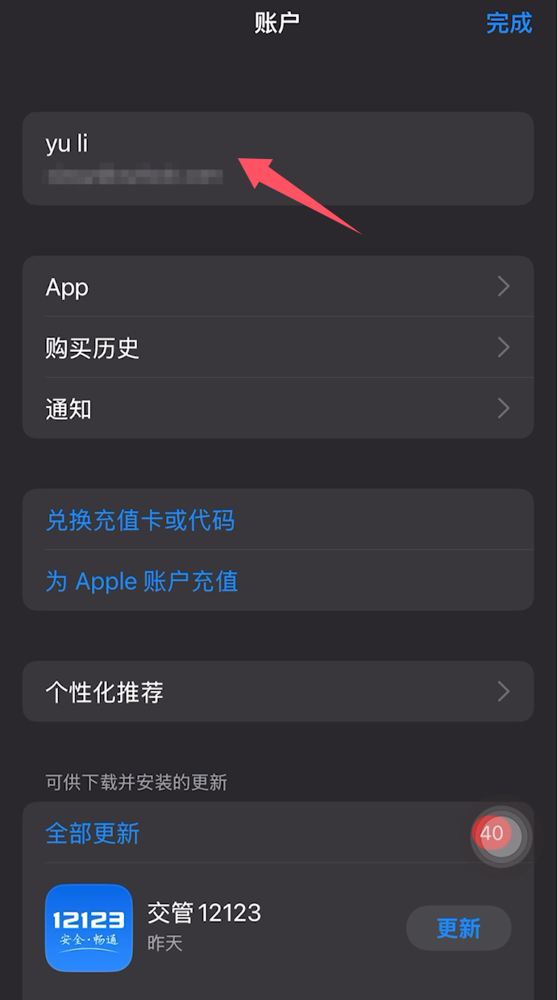
第二种方法：通过手机设置注册账号
打开手机设置，点击账户，退出当前账户，退出登录 ICloud。
点一次可能没有完全退出，多点几次。
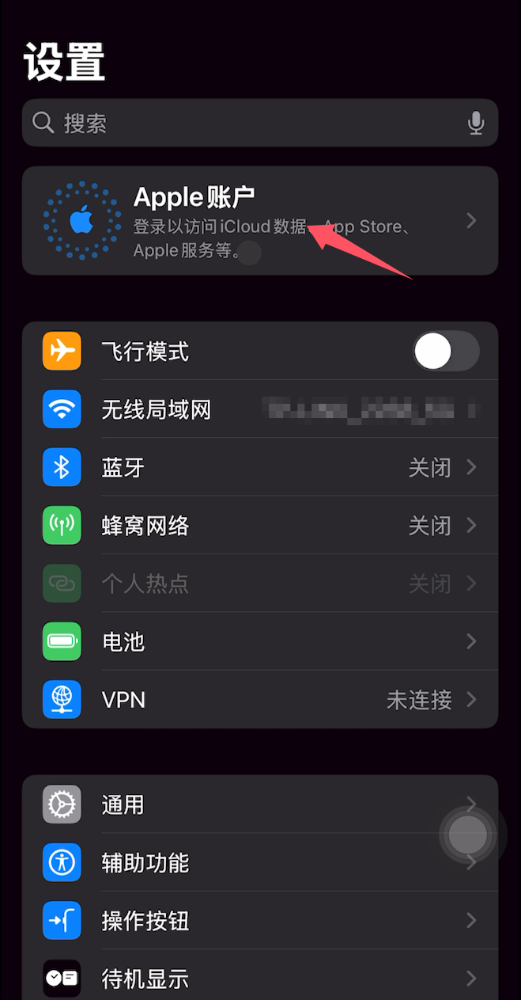
现在点击APPLE 账户，点击没有APPLE 账户
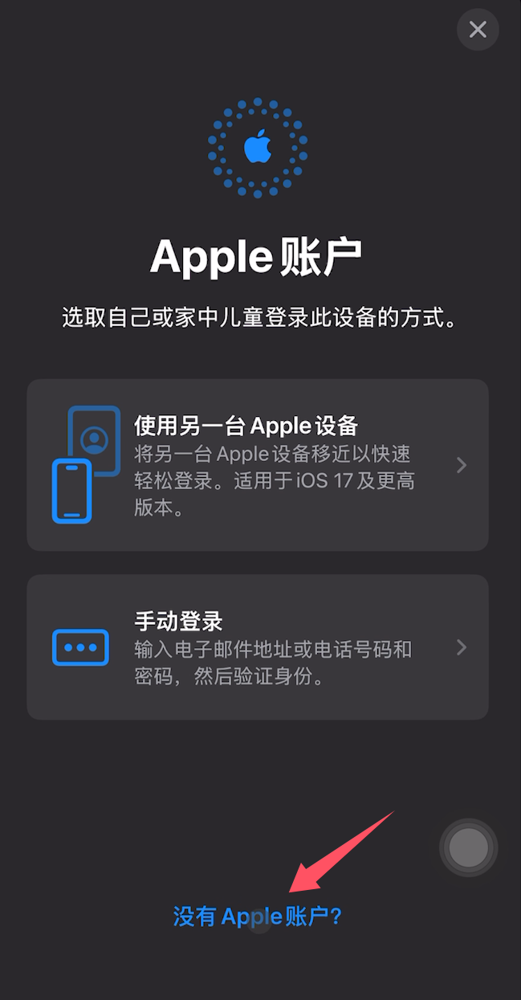
年龄段：选择成人
姓名和出生日期:填写姓名和出生日期
电子邮箱地址：填写你准备好的 Gmail / Outlook
Apple 账户密码：要求字母 + 数字 + 特殊符号
电话号码：填中国大陆手机，可以接收验证码
填写手机号码 ，后面的操作步骤就和前面的方法一模一样了。
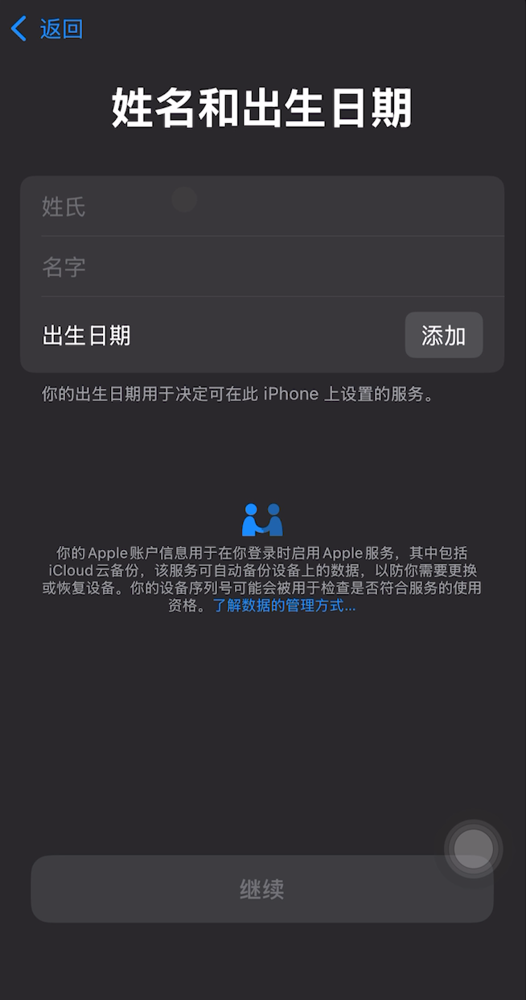
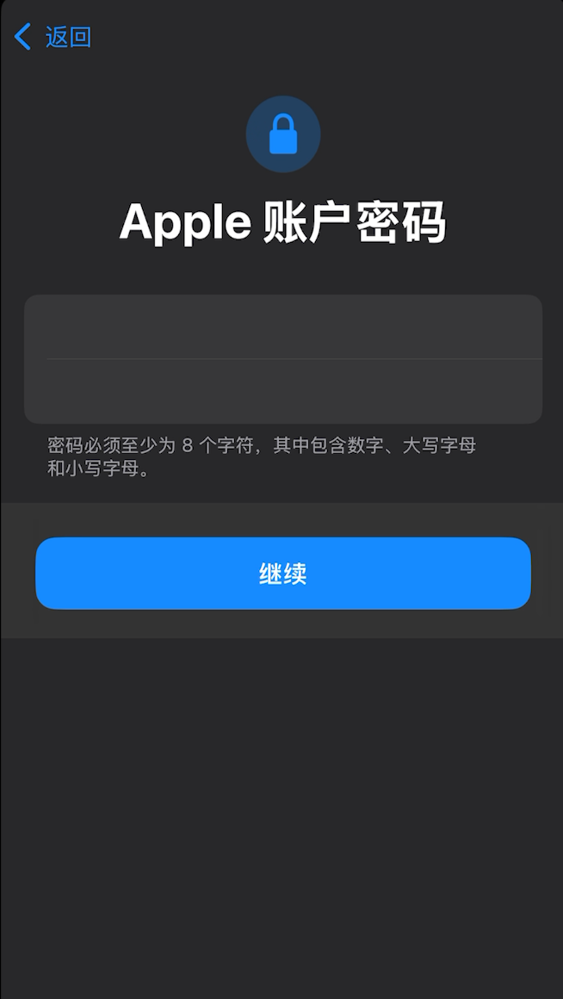
全都完成后，后续就能愉快地用美区 Apple ID 账号购买付费软件或者订阅「ChatGPT Plus」啦！
美区 Apple ID 的申请教程就到这里，如想直接购买 Apple ID 账号： 账号星球 | 苹果ID商店。
注册后一定要知道的安全提示（非常重要）
为了避免美区账号被锁、被停用，请注意以下几点：
✅ 不要频繁切换国家与地区
✅ 不要在多个国家同时使用一个 Apple ID
✅ 不要使用来路不明的美国支付方式
✅ 一定要开启两步验证
账号一旦被锁，你可以通过 iforgot.apple.com 进行解锁。